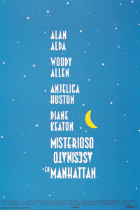

Misterioso asesinato en Manhattan
Larry y Carol Lipton acuden a ver un partido de hockey en el que ella se muestra visiblemente aburrida habiendo acompañado a Larry solo porque él prometió acompañarla a ella a la ópera.
De regreso a su casa coinciden en el ascensor con Paul y Lilian House, sus nuevos vecinos, los cuales los invitan a tomar un café en su casa, poniéndose mutuamente al día de sus vidas.
House les explica que es propietario de una vieja sala de cine que está reformando, mostrándole a Larry su colección de sellos, mientras que Carol les cuenta que trabajó en publicidad hasta que tuvieron a su hijo, y que ahora que este va a la universidad se está planteando la posibilidad de poner un restaurante cansada de su aburrida vida de ama de casa.
Al día siguiente, y tras ver "Perdición", los Lipton ven, al llegar a su edificio, que hay una ambulancia, enterándose al llegar a su piso, de que ha muerto la señora House de un infarto, lo que les impresiona mucho, ya que el día anterior parecía muy saludable.
Varios días más tarde Carol y Larry se encuentran con Paul House cuando salen hacia la ópera y aprovechan para darle el pésame.
Pese a la promesa que le hizo a Carol de que la acompañaría a la ópera salen antes de que esta acabe, afirmando él que no puede aguantar tanto Wagner, pues le dan ganas de invadir Polonia.
De vuelta a su casa, Carol comenta la extrañeza que le causó ver la entereza y el buen humor de Paul pese al escaso tiempo transcurrido desde la muerte de Lilian, aunque Larry no le da demasiada importancia, por lo que Carol acaba llamando a Ted, el mejor amigo de la pareja, y recién divorciado, el cual escucha a Carol y la anima a que monte un restaurante, diciéndole que conoce un local donde podrían montarlo, yendo al día siguiente a verlo.
Intrigada por la actitud de House, convence a Larry para ir a visitarlo llevándole una tarta.
Él les comenta que ha pensado en irse a Florida con su hermano.
Carol va hasta la cocina para preparar el café, encontrando, mientras lo busca una pequeña urna con cenizas dentro de un armario, lo que le lleva a pensar que les mintió cuando les habló de que tenían dos tumbas pareadas para cuando murieran, y Ted aviva su imaginación diciéndole que al quemarla trata de evitar que una posible autopsia pueda detectar la presencia de veneno en su organismo.
Una noche Carol se despierta y al escuchar ruidos mira por la mirilla, viendo salir a su vecino pese a ser la 1'30, comprobando que salió directamente por el garaje.
Al día siguiente Carol baja para pedirle al conserje que le ayude con un escape, aprovechando una pequeña ausencia de este para hacerse con la llave del apartamento del señor House, tras lo que se cuela en él aprovechando una ausencia de este, empezando a buscar por toda la casa.
Llama tras ello a Ted desde el propio apartamento de House, para contarle que no está ya la urna que vio en su anterior visita y que encontró dos billetes de avión para París a nombre de él y de Helen Moss.
Pero entonces regresa el vecino, que se olvidó algo, debiendo ella esconderse bajo su cama, desde donde le escucha hablar por teléfono con una mujer a la que le dice que él también la echa de menos.
Le escucha hacer una nueva llamada y preguntar por la extensión 5, escuchándole decir que es Tom, en vez de Paul.
Tras salir del apartamento le cuenta todo a Larry que se muestra espantado por la audacia de su mujer, encantada con su aventura, aunque preocupada porque se dejó en casa de House sus gafas de leer.
Prepara otra tarta y acude de nuevo con Larry a visitar a su vecino, dedicándose Larry a entretenerlo mientras Carol busca sus gafas.
Pero de pronto es el propio House quien se las entrega, mostrándose extrañado de haberlas encontrado bajo su cama.
Ted la ayuda en sus investigaciones, encontrando a una Helen Moss en el listín telefónico, acudiendo los dos a vigilar su portal desde el coche.
Mientras efectúan su vigilancia, recuerdan un viaje que hicieron a Francia con sus parejas en que estos se fueron sin ellos y tuvieron que compartir habitación - aunque no cama -, señalando él que lo deseaba.
Ven salir a una mujer y al gritar el nombre de Helen observan que ella se vuelve, por lo que siguen su taxi, observando que va hasta el viejo cine que Paul va a reformar.
Larry entretanto habla entretanto, como editor con Marcia Fox, una escritora a la que le propone salir con su amigo Ted.
Una noche House vuelve a salir y Carol decide colarse de nuevo en su casa, haciendo desde ella una rellamada, contestándole alguien que dice llamarse Waldron.
Al día siguiente Larry y Carol acuden a un restaurante para comer con su hijo Nick para celebrar su cumpleaños, encontrándose allí con Marcia, que le dice que ha quedado con Ted, notando Larry cómo esto no parece agradar a Carol, que dice que no cree que Marcia sea su tipo.
Y en su siguiente encuentro con Ted, durante una degustación de vino, hablan de ello y Ted, un poco borracho le dice que sale con Marcia al no poder salir con su mujer ideal, que es ella.
Ted se marcha y de pronto Carol ve desde la ventana a Lilian House en un autobús, lo que a Larry le parece poco probable, aunque van a preguntarle al conserje si él vio el cadáver de la señora House, a lo que este contesta afirmativamente.
Vuelve a quedar al día siguiente en el local donde hicieron la degustación, recorriendo juntos la últimas paradas del autobús en que vio a la señora House, sin llegar a ninguna conclusión, hasta que de regreso ella ve un hotel llamado Waldron, el mismo nombre que le dijeron al hacer la rellamada desde el apartamento de House.
Entretanto Larry, que se siente atraído por Marcia queda con ella para que le enseñe a jugar al póker, confesándole que teme que Carol se esté enamorando de Ted.
Decide por ello acompañarla en sus pesquisas, acudiendo con ella a vigilar el hotel Waldron pese a su incredulidad, siendo testigo de que ella no mentía, tras descubrir a la señora House entrando en el hotel.
Deciden ir al hotel, donde la limpiadora les dice que la mujer que entró es la señora Kane, subiendo hasta su habitación, cuya puerta encuentran abierta, descubriendo que dentro se encuentra en efecto Lilian House, pero muerta, por lo que salen corriendo y llaman a la policía, aunque cuando llegan no encuentran ningún cadáver.
Tras ver luces en la habitación deciden hacerse pasar por policías y regresan a la habitación donde no hay nadie mas que la limpiadora, pero encontrando una alianza.
Al marcharse se quedan atrapados en el ascensor, por lo que, tratando de salir, suben hasta el techo del ascensor, observando que el cadáver está allí, aunque entonces se va la luz y bajan, recorriendo varios pasillos a oscuras antes de encontrar una salida, viendo entonces cómo House carga con el cadáver y lo sube a su coche.
Siguiéndolo llegan hasta un desguace, donde ven cómo se deshace del cadáver haciendo que caiga en una caldera de acero fundido sin que puedan hacer nada, viendo además al llegar a su casa cómo sale House con su secretaria, con la que afirma haber estado viendo Madame Bovary.
Como los nervios no les dejan dormir deciden quedar con Ted y Marcia a los que le cuentan todo, pensando Marcia que la primera muerta no era la señora House, sino otra mujer muy parecida, quizá una hermana, que estaba en su casa y que murió, siendo para ellos muy conveniente esa muerte, por lo que la señora House la vistió con su ropa y se ocultó en un hotel, deshaciéndose posteriormente su marido de ella para poder huir con su amante, encubriéndolo su secretaria.
Marcia tiene una imaginación tan viva que tanto Ted como Larry se sienten fascinados ante el malestar de Carol, notando Larry cómo esta se siente celosa al ver la admiración de Ted por ella, a la que se le ocurre una estratagema: harán creer a House que rescataron el cuerpo antes de que este cayera en el acero fundido, y lo chantajearán.
Deciden llamar a Helen, la amante de House para una falsa prueba en el teatro de Ted, y allí le harán leer un texto con unas frases que luego editarán para luego, con las grabaciones simular que lo llama ella, siguiendo lo que leyeron en la novela: "Crimen en Manhattan" haciéndole creer que lograron rescatar el cadáver de su esposa, y pidiéndole 200.000 dólares para no delatarlo.
Realizada la audición, Ted entretiene a Helen mientras ellos continúan con su plan, que va bien hasta que Larry llama a House, para pedirle el dinero, aunque para entonces este se les ha adelantado y se ha colado en su casa y secuestrado a Carol, amenazando con matarla si no le entregan el cuerpo de su mujer.
Quedan para hacer el intercambio en el cine de él, donde proyectan "La dama de Shangai".
Larry acude a efectuar el intercambio, descubriendo House de inmediato que todo era un farol y que no tienen el cuerpo de Lilian, aunque consigue ocultarse tras la pantalla del cine, llena de espejos, adonde lo sigue House con un arma.
Pero aparece entonces la señora Dalton, la secretaria de House que le reprocha que le estuviera haciendo promesas durante años para dejarla por una joven, siendo ella quien le dispare a él, aunque al igual que en la película los espejos hacen que falle, disparando posteriormente él, que también falla, siendo finalmente la señora Dalton quien acabe con él.
Tras rescatar a Carol los amigos vuelven a reunirse para comentar todos los detalles.
La mujer que murió en el apartamento de los House era una viuda rica y solitaria, hermana de Lilian que tuvo un infarto mientras los visitaba, decidiendo el matrimonio aprovechar su parecido con aquella para simular la muerte de Lilian, la cual se hizo pasar por su hermana para sacar todo el dinero de sus cuentas y vender todos sus bienes, realizando un nuevo testamento en que dejaba a Lilian y Paul como sus únicos beneficiarios, ocultándose durante ese tiempo Lilian en el hotel Waldron.
Luego Paul se deshizo de su mujer para poder huir con su amante.
Toda la aventura ha unido mucho a Ted y a Marcia, que empiezan a salir juntos, aunque él le advierte que no podrá acostarse con ella ese día, ya que lo hizo antes con Helen Moss para mantenerla entretenida.
Larry y Carol por su parte regresan a su casa comentando lo ocurrido, más unidos tras su excitante aventura.